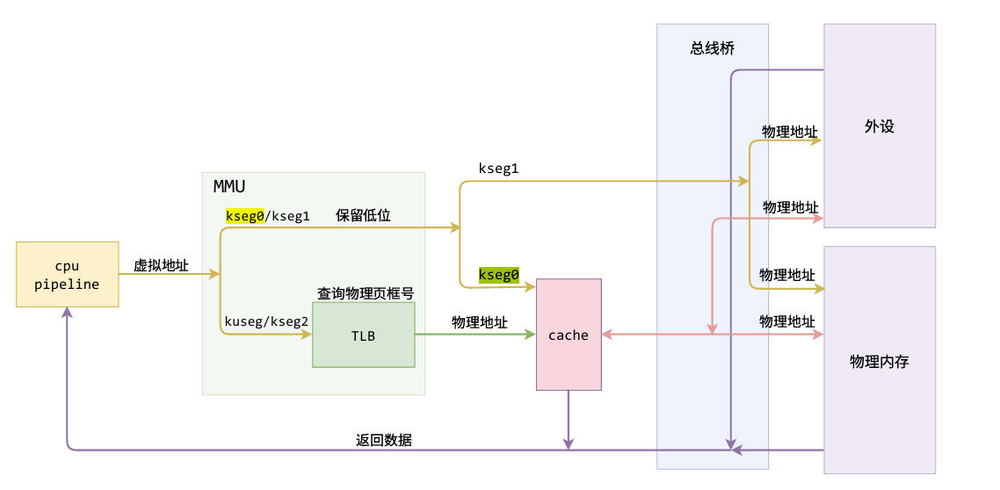
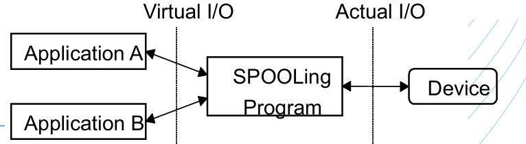
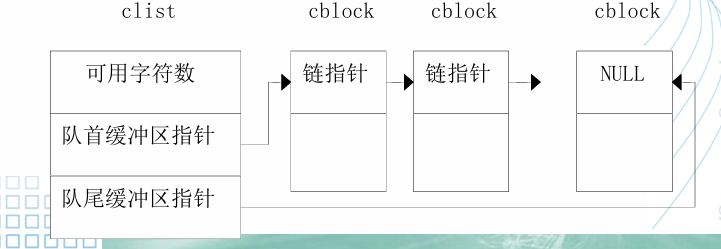
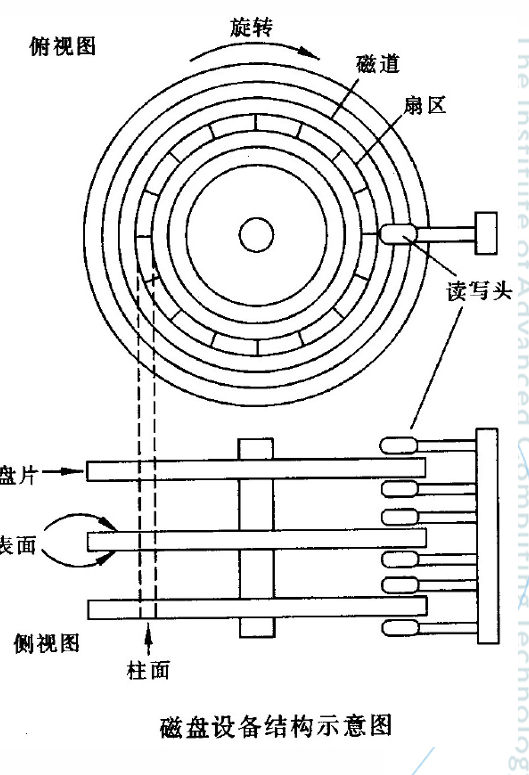
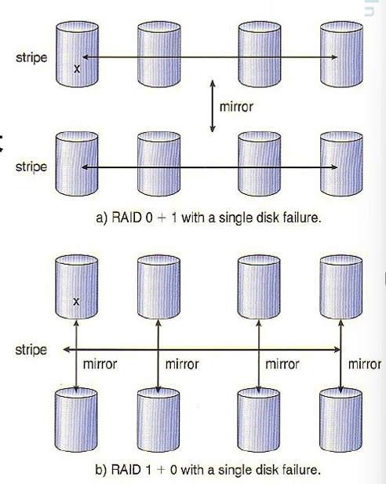
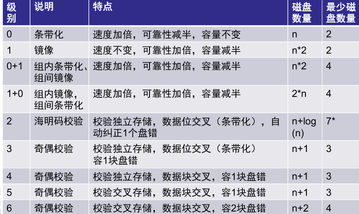
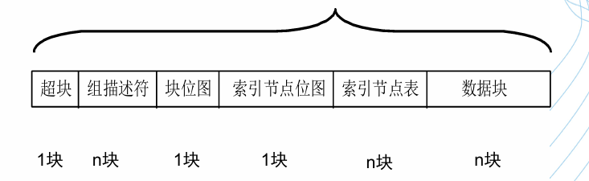
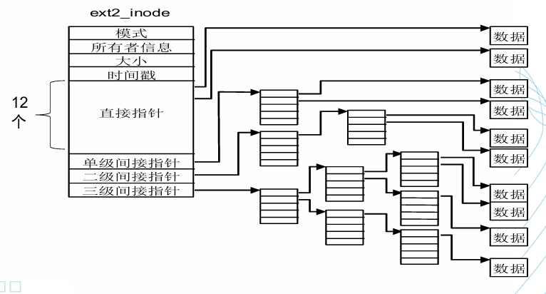

OS理论学习
OS复习
这是什么样的微风，我找不到准确的表述语句，只找到一连串的不是，不是杜甫“细草微风岸”的风，不是高骈“水晶帘动微风起”的风，冯延巳的“吹皱一池春水”是因为“风乍起”，过于突然，也不是，更不是“风萧萧兮易水寒”里的风，山谷微风不是壮志凌云之风，不会去送别荆轲，它知道自已普通微小，所以低调，其低调有点像我少年时期在炎热夏天里寻找的穿堂风。
知识点总结
MIPS工作空间

概述与启动
分布式系统
在整个系统中有一个全局的操作系统
有网络作为底层支持
特性
- 模块性
- 并行性
- 自治性
- 通信性
操作系统作用：管理资源，提供硬件访问的统一接口
操作系统的发展：
- 单任务串行 - 多任务并发
- 单处理器 - 多处理器 - 分布式网络化
多任务操作系统基本原理
分时——多个用户/任务互不干扰地使用资源
分时的基本方式（隔离手段）
虚拟：隔离所有资源
抽象：进程（隔离处理器、储存器）
TRAP指令：目态 - 管态 （用户 - 内核态）
异常：陷阱和中断
- 中断主要由I/O设备、处理器时钟或定时器等硬件产生，可以被启用和禁用
- 陷阱/陷入是用户进程中某一特定指令执行的结果，在相同条件下，异常可以重现。例如内存访问错误、调试指令以及被零除
- 系统调用是同步异常
- 陷阱帧：完整的线程描述表的自己，用于陷阱保护
- 陷阱处理程序处理少量事件，多数转交给其他的内核或 执行体模块处理

操作系统特征
- 并发
共享（互斥共享（打印机、变量），同时访问（宏观））
- 互斥共享：大多数物理设备和其软件使用的栈、变量、表格
虚拟
- 分时共享
异步性
- 受资源限制，程序走走停停
用户访问计算机——命令接口和程序接口（系统调用）
OS功能
- 处理机管理——分配CPU时间
- 储存器管理——管理缓存、主存、磁盘等所 形成的多级存储架构，为多道程序的并 发提供良好的环境
- 设备管理——管理输入/输出设备，屏蔽差 异性，提供并发访问
- 文件系统——将磁盘变成一个很容易使用的 存储媒介提供给用户使用
- 作业控制——作业调度
操作系统的基本类型
- 工作方式：批处理系统、分时系统、实时系统、混合型
- 架构：微内核、宏内核、外内核
微内核
内核中只包括中断处理、进程通信（IPC）、 基本调度等
优点：内核易于实现、可靠性高、可移植性好、配置灵活、 适应分布式环境
缺点：速度慢
引导加载程序是系统加电后运行的第一段程序，称为Bootloader
Bios
bios设置程序是被固化到电脑主板上的ROM芯片中的一组程序（断电后不会丢失的只读程序）
- 硬件自检
- 读取启动顺序
例题：在传统x86体系结构下，计算机引导过程中以下哪项不是 BIOS负责的任务？
- 读取MBR并装载到内存特定地址（Bootloader）
- 自检系统，当有设备故障时暂停启动过程并告警（Bios）
- 选择引导磁盘（Bios）
- 装载打印机驱动（没必要）
- 启动显示器（Bios）
- 解压缩操作系统Kernel（Bootloader）
系统引导
MBR（Master Boot Record）：磁盘的第0磁头第0磁道的第一个扇区
Bootloader：操作系统内核运行前执行的一小段程序
BootLoader
操作系统内核运行前的一小段程序
通常bootloader可以支持不同CPU架构，也可以支持不同操作系统的启动。
C语言中函数压栈顺序：先压最后一个参数
访问速度
DRAM < DDR(SDRAM) < SRAM。
储存与管理
储存管理至少要解决分配与回收
- 地址空间：逻辑地址的集合
- 储存空间：逻辑地址的集合
单道程序的内存管理
内存中只有两个程序——用户程序和操作系统
用户程序的地址再运行之前可以运算
优点：简单
缺点：比物理内存大的程序无法加载、小程序会造成空间浪费
多道程序设计
空间的分配：分区式分配，把内存分为一些大小相等或者不等的分区
- 固定式分区分配（静态）：程序适应分区
- 可变式分区分配（动态）：分区适应程序
固定式分区
系统初始化时，把储存空间划分为若干个任意大小的区域，然后将这些区域分配个每个用户作业。
- 分区大小相等：只适用于多个相同程序的并发执行（处理多个类型相同的对象）
- 分区大小不等：多个小分区、适量的中等分区、少量 的大分区。根据程序的大小，分配当前空闲的、适当 大小的分区
优点：易于实现，开销小
缺点：内碎片造成浪费，分区总数固定，限制并发执行的程序数量
- 单一队列的分配方式
多个用户程序排在一个 共同的队列里面等待分区
- 对队列分配方式
每个分区一个队列，程序按照大小排在相应的队列里，避免给小程序分配大空间
可变式分区
分区的边界可以移动，即分区大小可变
优点：没有内碎片，缺点：有外碎片
碎片
内存中无法被利用的储存空间
- 内碎片
分配给作业的储存空间中未被利用的部分，已分配只是未被使用，完成后会得到释放
- 外碎片
分区与分区之间存在的碎片。外部碎片是造成内存系统性能下降的主要原因，外部碎片可以被整理后消除（消除外部碎片的方法：紧凑技术）
闲置空间的管理
- 位图表示法
字位取值为0表示闲置，为1表示占用
空间成本固定，时间成本低，没有容错
- 链表表示法
将分配单元链接起来
空间成本取决于程序的数量，时间成本扫描速度较慢，有一点容错能力
分配算法
- 首次适应（First Fit）
从空白区域链的始端开始查找，选择第一个满足情况的空白快
低地址肯留下难以利用的小空间
- 下次适应算法（Next Fit）
从上次查找结束的地方开始，找到一个足够大的空白区将它划分后分配出去
利用更均衡，可能导致缺乏大空间
- 最佳适应算法（Best Fit）
大小最合适的储存区域
使得剩下的空闲区非常小，从而留下许多难以利用的碎片
- 最坏适应算法（Worst Fit）
总是寻找最大空白区
后续可能不能应对大空闲区
索引搜索分配
快速适应分配（分类搜索）
按空闲分区的大小进行分类，经常用到长度的空闲区设立单独的空闲区链表。系统为多个空闲链表设立 一张管理索引表。
优点：查找效率高，不会对任何分区产生分割，能保留大的分区，也不会产生内存碎片
缺点：算法复杂，分配分区时以进程为单位，一个分区只属于一个进程，造成浪费。
伙伴系统
伙伴系统是介于固定分区与可变分区的动态分区技术
规定：大小均为2的k次幂
内存释放首先将被释放块与其伙伴合并为一个大的空闲块，直到不能合并。
注意：如果两个储存快大小相等且地址相邻但不是由一个大块分裂出来的，则不可以被合并起来。
即会产生内碎片又会产生外碎片
可重定位分区分配
定时的或内存紧张时，移动某些已分配区中的信息，把储存空间中所有的空白区合并为一个大的连续区。
缺点：性能开销大，依赖DMA，间接寻址
程序处理流程
编译 - 链接 - 装入
程序的链接
- 静态链接
用户一个工程中所需的多个程序采用静态链接的方式链接在一起。当我们希望共享库的函数代码直接链接入程序代码中，也采用静态链接方式
- 动态链接
用于链接共享库代码。当程序运行中需要某些目标模块时，才对它们进行链接，具有高效且节省内存空间的优点。但相比静态链接， 使用动态链接库的程序相对慢
程序装入
未来保证程序地址可以改变，程序运行时才把相对地址转化为绝对地址
多重分区分配：一个作业往往由相对独立 的程序段和数据段组成，将这些片断分别 装入到存储空间中不同的区域内的分配方式。
- bss段 存放未初始化的全局变量
- data段 存放已经初始化的全局变量
- text段 代码段
程序链接
将.o文件链接在一起，形成最终的可执行文件，链接时会扫描各个文件，将之前未填写的地址填上，形成一个可执行的文件。
程序的装载与运行
- shell调用fork系统调用
- 创建出一个子进程
- 子进程调用execve（）加载program
一个segment在文件中的大小小于等于在内存中的大小
程序装载过程
- 读取ELF头部的魔数确认是ELF文件
- 找到段表项
- 对于每个段表项解析出各个段应对被加载到虚拟地址、在文件中的偏移，以及在内存中的大小和在文件中的大小（段在文件中的大小小于等于内存中的大小）
.text保存可执行文件的操作指令，包括局部变量
.data保存已初始化的全局变量和静态变量。
.bss保存未初始化的全局变量和静态变量
程序、进程和作业
- 程序：静止的，存放在磁盘上的可执行文件（静态概念）
- 进程：包括程序和程序处理对象，是程序对某个数据集的执行过程，是分配资源的基本单位。进程是竞争计算机系统有限资源的基本单位。 进程更能真实地描述并发，而程序不能。每一个进程由进程控制块PCB、程序和数据集合组成。
- 完成操作系统功能的进程是系统进程
- 完成用户功能的是用户进程
- 作业时计算机所做工作的集合。作业时任务实体，进程是执行实体
一个程序可以作为多个进程的运行程序，一个进程也可以运行多个程序
页式储存管理
- 页：把每个作业的地址空间分为一些大小相等的片成为页面或页
- 储存块：把主存的存储空间也分成与页面相同大小的片，这些片称为存储块，或称为页框。
纯分页系统
不具备页面置换功能，必须把它的所有页一次装到主存的页框内；如果当时页框数不足，则该作业必须等待，系统再调度另外作业。
没有外碎片，每个内碎片不超过页大小
程序不必连续存放，便于改变程序占用空间大小
页面大小分析
- 大
- 优点：页面数减少，页表长度减少，内存减少，I/O减少
- 缺点：内碎片增大，不利于提高内存利用率
- 小
- 优点：减少页内碎片和总的内存碎片，有利于提高内存利用率
- 缺点：页面数增大，页表长度增加，内存增大，I/O增大
逻辑上相邻，物理上不一定相邻
- 进程页表，每个进程都有的一个页表，描述进程占用的物理空间和逻辑排列顺序
- 物理页面表，整个系统有一个物理页面表，描述物理内存空间的的分配使用情况
- 请求表，整个系统有一个请求表描述系统内进程表的位置和大小
假定进程平均占用s个字节，页面大小是p个字节，一个页表项约占e字节
- 分页的开销为：se/p+p/2
页表机制
分级越多，内存空间确实使用少了，但访问时间大大增加。于是引入了MMU，组成如下
- 页表Cache（TLB）
- 页表查找单元

某些TLB还包括地址空间标识码（ASID）
哈希页表、反置页表
反置页表介绍（解决消耗大量物理内存的问题）
- 按照物理页号排序，表项的内容是逻辑页号 P 及隶属进程标志符 pid
- 大小只与物理内存的大小相关

页保护
- 地址越界保护
- 设置保护位（只读等）
页共享
分段储存管理
段式储存管理
页式储存信息的物理单元，段是信息的逻辑单位
段式地址整体是二维的不连续的，但段内地址是从0开始的连续地址
信息保护
- 页式管理中，一个页面中可能装有 2 个不同的子程序段的指令代码，不能通过页面共享实现共享一个逻辑上完整的子程序或数据块
- 段式管理中，可以以信息的逻辑单位进行保护。
逻辑地址结构：段号 + 位移量W ，但不一定是32位

可重入代码
可重入代码(Reentrant Code) 又称为“纯代码”(Pure Code)，是一种允许多个进程同时访问的代码。为使各个进程所执行的代码完全相同， 绝对不允许可重入代码在执行中有任何改变。因此，可重入代码是一 种不允许任何进程对它进行修改的代码。
优点：分段系统已于实现段的共享，对段的保护也十分简单
缺点：地址转换耗时，空间问题
段页式储存管理
分段和分页结合
先把用户程序分为若干个段，再把每个段分为若干页
格式：段号 - 段内页号 - 页内地址
X86的段页式地址映射
段映射机制，将逻辑地址映射到线性地址
页映射机制，将线性地址映射到物理地址
段描述结构都放在一个表 （Descriptor Table）中（GDT或LDT等）
X86的控制寄存器
- CR0中含有控制处理器操作模式和状态的系统控制标志；
- CR1保留不用
- CR2含有导致页错误的线性地址
- CR3中含有页目录表物理内存基地址（PDBR）
虚拟内存管理
- 覆盖（时间，时间上扩展）
把程序执行时并不要求同时装入主存的覆盖组成一组，称其为覆盖段，这个覆盖段被分配到同一个存储区域。这个存储区域称之为覆盖区，它与覆盖段一一对应。
- 交换（借用，空间上扩展）
是把暂时不用的某个（或某些）程序及其数据的部分或全部从主存移到辅存中去，以便腾出必要的存储空间
局部性原理
- 时间局部性
一条指令的一次执行和下次执行，一个数据的一次访问和下次访问都集中在一个较短时期内
- 空间局部性
即当前指令和邻近的几条指令， 当前访问的数据和邻近的数据都集中在一个较小区域内
虚拟内存
- 按需装入
- 缺页装入
- 不用调出
特征
- 离散性
- 多次性
- 对换性
- 虚拟
虚拟性以多次性和对换性为基础， 多次性和对换性必须以离散分配为基础
优点：
- 较小的内存中执行较大的用户程序
- 容纳更多程序并发执行
代价：牺牲CPU
限制：虚拟内存的最大容量有计算机的地址结构决定（32位-4G）
实存与虚存
实存
- 分区
- 分页
- 分段
- 段页式
虚存
- 请求分页
- 请求分段
- 请求段页式
请求式分页
虚拟存储系统：控制自动页面交换而用户页面意识不到的那个机构
进程的虚拟地址空间为进程在内存中存放的逻辑视图，因此一个进程的虚拟地址空间的大小和该进程的虚拟储存空间相同。（从0开始的编址的虚拟储存空间又称虚拟内存空间）
调入问题
什么程序和数据调入
- OS的核心部分的程序和数据
- 正在运行的用户程序相关的程序和数据
何时调入
OS系统启动时调入
用户程序调用取决与策略
- 预调页（pre-paging）
预调页同时 将所需要的所有页一起调入内存，从而阻止 了大量的页错误
- 按需调页
当且仅当需要某页时才将该页调入内存的技术称为按需调页，使用懒惰交换（lazy swapper），按需调页需要使用备份存储，保存不在内存中的 页，通常为快速磁盘，用于和内存交换页的部分空间称为交换空间
如何调入
- 缺页错误处理机制
缺页错误处理机制

处理过程
- 陷入内核，保护现场
- 查找页面
- 权限检查，发生保护错误则杀死进程
- 查找空闲页框，如果没有则需要通过页面置换算法找到一个需要换出的页框
- 如果找到页框被修改了，则需要将修改的内容保护到磁盘上
- 页面干净后，操作系统将保存在磁盘上的页面内容复制到该页框
- 当磁盘中的页面内容全部装入页框后，向操作系统发送一个中断。操作系统更新内存中的页表项，将虚拟页面映射的页框号更新为写入的页框，并将页框标记为正常状态。（更新页表）
- 恢复进程
- 继续执行
页面置换策略
- 最优置换（OPT算法）
置换未来最久不被使用的，最完美但是不现实
- 先进先出（FIFO）
性能较差，会出现Belady现象
FIFO算法的置换特征与进程访问内存的动态特征是矛盾的
- 改进FIFO（Second Chance）
每个页面增加一个访问位，A是FIFO队列中最旧的页面，且其放入队列后没有被再次访问，则A被立刻淘汰否则如果放入队列后被访问过，则将A移到FIFO队列头，并且将访问标志位清除。如果所有的页面都被访问过，则经过一次循环后就会按照FIFO的原则淘汰。
- 改进FIFO（Clock），最近未使用算法
使用环形队列
产生缺页错误时，当前指针指向C，如果C被访问过，则清除C的访问标志，并将指针指向D；如果C没有被访问过，则将新页面放入到C的位置，置访问标志， 并将指针指向D
- 最近最少使用（LRU）
性能接近最优算法，设置一个特殊的栈，保存当前使用的各个页面的页面号。每当进程访问某页面时，便将该页面的页面号从栈中移出，将它压入栈顶。栈底始终是最近最久未使用页面的页面号
- 老化算法（AGING）
为每个页面设置一个移位寄存器，并设置一位访问位R， 每隔一段时间，所有寄存器右移1位，并将R值从左移入。
Belady现象
分配的页面增多，缺页率反而提高的现象
进程的工作集：当前正在使用的页面集合
进程的驻留集：虚拟存储系统中，每个进程驻留在内存的页面集合或进程分到的物理页框集合
抖动
随着驻留内存的进程数目增加，或者说进程并发水平的上升，处理器利用率先是上升，然后下降。(常驻集减少，缺页率增加，频繁调页)
- 局部置换策略
- 引入工作集算法
- 预留部分页面
- 挂起若干进程
写时复制（copy-on-write）
资源的复制只有在需要写入的时候才进行。
自映射！！！
详见作业3类似于不动点
可节省4KB的虚拟地址空间
进程与并发程序
并发与并行
并发：直要都在各自起点与重点之间就是并发执行，程序的并发执行是指若干个程序（或程序段） 同时在系统中运行，这些程序（或程序段）的 执行在时间上是重叠的。
并行：两程序在同一时间量度下同时运行在不同的处理机上，则称这两个程序是并行执行的
并发可能是伪并行
顺序执行
- 顺序性
- 封闭性
- 可再现性
并发执行
- 间断性
- 非封闭性
- 不可再现性
Bernstein条件
以下条件同时成立时，S1与S2可并发
- $R(S1) \cap W(S2) = \emptyset$
- $W(S1) \cap R(S2) = \emptyset$
- $W(S1) \cap W(S2) = \emptyset$
进程
进程是程序的一次执行
- 动态性
- 并发性
- 独立性
- 异步性（进程之间相互制约）
结构特征：程序段、数据段、进程控制块（PCB）
PCB的内容
- 进程标识符
- 程序和数据的地址
- 现行状态
- 现场保留区
- 同步与互斥机制（用于实现同步互斥的信号量）
- 优先级
- 资源清单
- 链接字
- 其他信息
进程控制
主要任务：创建和撤销进程，实现进程的状态转化（内核实现）
进程控制实现：原语（由若干条指令所组成的指令序列，来 实现某个特定的操作功能）
- 指令序列执行是连续的不可分割
- 操作系统核心组成部分
- 必须在管态执行，且常驻内存
Fork（）函数
在fork函数执行完毕后，如果创建新进程成功，则出 现两个进程，一个是子进程，一个是父进程。在子进程中，fork函数返回0，在父进程中，fork返回新创建子进程的进程ID。我们可以通过fork返回的值来判断 当前进程是子进程还是父进程。
fork被调用一次，但返回两次
进程的状态
- 就绪：等待分配处理机资源
- 执行：占用处理机资源
- 阻塞：放弃处理机处于暂停状态

运行 $\rightarrow$ 就绪
- 运行进程用完时间片
- 运行进程被中断，因为一高优先级进程处于就绪状态
运行 $\rightarrow$ 阻塞
- 进程所需资源必须等待
- OS尚未完成服务
- 对一资源访问不能进行
- 初始化I/O必须等待
- 等待某一进程提供输出
原语：由若干条指令所组成的指令序列，来实现某个特定的操作功能
- 指令序列执行是连续的，不可分割
- 是操作系统核心组成部分
- 必须在管态（内核态）下执行，且常驻内存
线程
进程包括了两个概念：资源拥有者和可执行单元
资源拥有者为进程，可执行单元为线程
线程：将资源与计算分离，提高并发效率
- 减小线程切换开销
- 提高进程内的并发程度
- 共享资源
线程是进程中的一个实体，是一个CPU调度和分配的单元
容易创建和撤销
一个进程可以拥有多个线程，而一个线程同时只能被一 个进程所拥有
进程是资源分配的基本单位，线程是处理机调度的基本单位
线程安全
多个线程调用同一个对象的行为都可以获得正确的结果
可重入不一定线程安全，线程安全不一定可重入
Linux下的线程创建
fork用于创建普通进程，clone可用于创建线程
fork和clone都调用do_fork函数执行创建进程的操作
用户级线程
- 线程切换与内核无关，易优化，例子：java threads，但是易阻塞
内核级线程
- 内核级线程就是kernel有 好几个分身,一个分身可 以处理一件事
- 内核可以在多个处理器上调度一个进程的多个线程实现同步并执行，但切换过程会降低效率
线程模型（王道P45）
- Many-to-One
将多个用户级线程映射到一个内核级线程，线程管理在用户空间完成。线程管理在用户空间进行，效率较高，但某个线程在使用内核服务被阻塞时i，整个进程都会被阻塞
- One-to-One
将每个用户级线程映射到一个内核级线程。并发能力抢，但创建线程开销大，没创建一个内核级线程都需要创建一个内核级线程与其对应
- Many-to-Many
将 n 个用户级线程映射到 m 个内核级线程上，要求 m <= n。
临界资源与临界区
临界资源：一次仅允许一个线程访问的资源称为临界资源
临界区：每个进程中访问临界资源的那段代码
互斥与同步
- 进程互斥，间接制约关系，访问是无序访问，两个或两个以上的进程，不能同时进入关于同一组共享变量的临界区域
- 进程同步，直接制约关系，通过机制实现有序访问
互斥区管理条件
- 没有进程在临界区是，想进入临界区的进程可以进入
- 任何两个进程不能同时进入临界区
- 当一个进程在它的临界区外面外面时，不能妨碍其他进程进入临界区
- 任何一个进程进入临界区的要求应该在有限的时间内得到满足
设计原则
- 空闲让进
- 忙则等待
- 有限等待
- 让权等待
面包店算法
设置一个发号器，按由小到大的次序发放号码。进程进入临界区前先抓取一个号码，然后按号码从小到大的次序依次进入临界区。若多个进程抓到相同的号码则按进程编号依次进入
硬件方案
- 中断屏蔽
使用“开关中断”，简单但不适用于多CPU系统，可能会造成很大的性能损失
- test and set指令
在多进程可同时 存取内存的情况下，如果一个进程正在执行检查并设置， 在它执行完成前，其它的进程不可以执行检查并设置
- swap指令
和ts类似会循环交换两个变量
以上软硬件方案共性问题
- 忙等待：浪费CPU
- 优先级反转：低优先级进程先进入临界区，高优先级进程一直忙等
信号量
信号量只能通过初始化和两个标准的原语来访问，作为OS核心代码执行， 不受进程调度的打断
- 必须置一次且只能置一次初值
- 只能由P、V操作来改变
物理意义
- S.value为正时表示资源的个数
- S.value为负时表示等待进程的个数
- P操作分配资源，如果无法分配则阻塞
- V操作释放资源，如果有等待进程则唤醒
简单，且表达能力强大（PV操作可解决任何同步互斥问题），但是不够安全，P.V操作使用不当会出现死锁；遇到复杂同步互斥问题时实现复杂
信号量级机制
- AND信号量级机制
将进程需要的所有共享资源一次全部分配给它；待该进程使用完后再一起释放。
管程
管程：把分散的临界区集中起来，为每个可共享资源设计一个专门机构来统一管理各进程对该资源的访问，这个专门机构称为管程
一个管程是由过程、变量及数据结构等组成的一个集合，它们组成一个特殊的模块或者软件包
互斥：任一时刻，管程中只能有一个活跃进程
管程是一种语言概念，由编译器负责实现互斥
- 操作原语（互斥）：对控制变量和临界资源进行操作的一组原语过程（程序代码），是访问该管程的唯一途径。
- 条件变量（同步）：每个独立的条件变量是和进程需要等待的某种原因相联系的，当定义一个条件变量x时，系统就建立一个相应的等待队列
条件变量与信号量的区别
- 条件变量的值不可增减，P-V操作的信号量值可增减
- 访问条件变量必须拥有管程的锁
进程通信
- 低级通信
只能传递状态和整数值（控制信息），包括进程互斥和同步所采用的信号量和管程机制。传递信息量少，编程复杂
- 高级通信
适用于分布式系统，基于共享内存的多处理机系统，单处理机系统，能够传送任 意数量的数据，可以解决进程的同步问题和通信问题，主要包括三类：管道、共享内存、消息系统
优先级继承
也就是，高优先级进程TH在等待低优先级的线程TL继承占用的竞争资源时，为了使TH能够尽快获得调度运行，由操作系统把TL的优先级提高到TH的优先级，从而让TL以TH的优先级参与调度，尽快让TL执行并释放调TH欲获得的竞争资源，然后TL的优先级调整到继承前的水平，此时TH可获得竞争资源而继续执行。
信号量集
SP(S, d, d)：表示每次申请d个资源， 当资源数量少于d个时，便不予分配。
SP(S, 1, 1)：表示互斥信号量。
SP(S, 1, 0)：可作为一个可控开关(当S≥1 时，允许多个进程进入临界区；当S=0时禁止 任何进程进入临界区)
共享内存
最有用的进程之间的通信方式，也是最快的，同一块物理地址映射到A、B各自的地址进程空间，但是收到同步机制约束
无名管道
半双工的（只能沿着一个方向）
只能用于父子进程或者兄弟进程（有亲缘关系的进程）
有名管道
即使与FIFO的创建进程不存在 亲缘关系的进程，只要可以访问该路径，就能 够彼此通过FIFO相互通信（能够访问该路径 的进程以及FIFO的创建进程之间），因此， 通过FIFO不相关的进程也能交换数据。解决了无名管道相关的问题。
经典同步互斥问题
生产者-消费者模型
1 | |
读写者问题
读写公平
1 | |
读者优先
1 | |
写者优先
1 | |
进程调度
什么是CPU调度
CPU 调度的任务是控制、协调多个进程对CPU 的竞争。也就是按照一定的策略（调度算法），从就绪队列中选择一个进程，并把CPU 的控制权交给被选中的进程。
调度种类
- 高级调度（宏观调度、作业调度）：从用户工作流程的角度，一次提交的若干个作业，对每一个作业进行调度，时间上通常是分钟、小时或者天。
- 中级调度（内外存交换）：由于指令和数据必须在内存里才可以被CPU直接访问，从存储器资源的角度，将进程的部分或全部换出到外存上，将当前所需部分换入到内存
- 低级调度（微观调度，进程调度，线程调度）：从CPU资源的角度，执行的单位，时间上通常是毫秒。因为执行频繁，要求实现时要达到高效率（进行调度的时机有：进程被创建时（执行新进程还是继续执行父进程）、结束时、阻塞时(I/O或者信号量阻塞)、主动让出CPU时、时钟中断发生时，进行系统调用时，发生陷阱时……）
- 非抢占式
- 抢占式
- 时间片原则
- 优先权原则
- 短作业优先原则
切换操作
- 保留处理器上下文，包括程序计数器和其他寄存器
- 更新当前PCB
- 将进程移到合适队列（就绪，阻塞）
- 选择另一要执行进程
- 更新被选中的PCB
- 装入CPU
性能指标
周转时间：作业从提交到完成（得到结果） 所经历的时间
响应时间：：用户输入一个请求（如击键）到 系统给出首次响应（如屏幕显示）的时间－ 分时系统
截至时间：类似于周转时间
吞吐量：单位时间内完成的作业数和作业本身特性和调度算法都有关系——批处理系统
处理机利用率：忙碌时间/总时间
进程分类
- 资源需求
- CPU密集型
- I/O密集型
- 交互性
- 批处理进程
- 无需交互，在后台进行
- 不需要很快的响应
- 编译器、科学计算都是典型的批处理程序
- 交互式进程
- 交互频繁，需要等待用户输入
- 相应时间要快，平均延迟要低于50-150ms
- 典型：Word，触控GUI
- 实时进程
- 有实时要求
- 响应时间短且稳定
- 典型：视频，控制类
- 批处理进程
调度策略
批处理系统的调度策略
- 先来先服务（FCFS）：典型FIFO，比较有利于长作业，不利于短作业，利于CPU繁忙的作业，不利于I/O繁忙的作业
- 短作业优先（SJF/SPN）：对长作业不利，未能按照作业紧迫程度进行
- 最短剩余时间优先（SRTF）：改为了抢占式，缺点：源源不断的短任务到来可能使得长任务长时间不得运行从而导致“饥饿”
- 最高响应比（HRRF）：响应比RP(响应优先级) = $1 + 已等待时间/要求等待时间$ ， 保证了饥饿现象不会出现，但是计算响应比会有一定开销
交互式系统的调度策略
- 时间片轮转（Round Robin）：排队-轮转-中断-抢占-出让
- 时间片过长，退化为FCFS，过短上下文切换次数增加，响应时间长
- 响应时间 = 进程数目 * 时间片
- 应当使用户输入通常在一个时 间片内能处理完，否则会使响应时间、平均周转 时间和平均带权周转时间延长
- 优先级算法
- 静态优先级，创建进程时就确定
- 动态优先级：在创建进程时赋予的优先级，在进程运行 过程中可以自动改变，以便获得更好的调度性能，如
- 就绪队列中等待时间时间延长则优先级提高
- 进程每执行一个时间片就降低优先级
- 多级队列：引入多个就绪队列，通过各队列的区别对待达到一个综合调度
- 不同队列可有不同的优先级、时间片长度、调度 策略等；在运行过程中还可改变进程所在队列。 如：系统进程、用户交互进程、批处理进程等
- I/O进程：让其进入最高优先级队列，以及时响 应I/O交互。通常执行一个小时间片，要求可处理 完一次I/O请求的数据，然后转入到阻塞队列。
- 计算型进程：每次都执行完时间片，进入更低级队 列。最终采用最大时间片来执行，减少调度次数。
- 优先级倒置（优先级：A>B>C，A，C共享临界区，C被B抢占CPU，A也只能被迫等着）的解决——优先级置顶（C继承A的优先级）
实时系统
资源利用率较低
一种时间起着主导作用的系统，计算机必须在一个确定的时间范围内恰当作出反应
- 硬实时系统（汽车、飞机控制系统）
- 软实时系统（偶尔可以不满足，视频/音频）
实时调度
- 要求更详细的调度信息
- 采用抢先式调度
- 快速中断响应
- 快速任务分派
前提：任务集已知
- 静态固定分配
- 单调速率调度（优先级静态固定分配），静态、抢先式调度
优先级与周期成反比
最早截止期优先EDF，任务的绝对截至时间越早，优先级越高
最低松弛度优先算法LLF，任务的紧急度越高，其优先级越高，并使之优先执行。松弛度（Laxity） = 进程截至时间-本身剩余运行时间-当前时间
多处理机调度
相比单处理机更加重视整体运行调度，有着更多样的调度算法，调度单位广泛采用线程
非对称多处理系统（AMP）
各个处理器的地位不一样，有潜在的不可靠性
- 神威·太湖之光超级计算机
- 国产申威SW26010
对称式多处理系统（SMP）
各个处理器地位相同
调度算法分为集中控制（静态和动态分配）和分散控制（自调度）
静态分配，每个CPU设立一个就绪队列，进程从开始到结束都在同一个CPU上，调度算法开销小但是容易出现忙闲不均
动态分配：所有CPU 采用一个公共就绪队列，队首进程每次分派到当前空闲的CPU上执行。可防止系统中多个处理器忙闲不均
- 自调度：整个系统采用一个公共就绪队列，每个处理机都可 以从队列中选择适当进程来执行，不需要专门的处理机从事任务分配，但是存在队列同步开销、缓存更新开销、线程协作开销
- 成组调度： 将一个进程中的一组线程，每次分派时同时到一组 处理机上执行，在剥夺处理机时也同时对这一组线 程进行。提高了并行度。
- 专用处理机调度：为进程中的每个线程都固定分配一个CPU， 直到该线程执行完成。适用于：CPU数量众多的高度并行系统， 单个CPU利用率已不太重要。
Linux调度
- Linux 2.4：O(n)调度器 (Linus)
- Linux 2.6.0：O(1)调度器 每个CPU维护一个自己的运行队列
- Linux 2.6.23：CFS（Completely Fair Scheduler，完全公平调度器）
死锁专题
定义：一组进程中，每个进程都无限等待被该组进程中其他进程所占有的资源，在无外力接入条件下，将因永远无法分配到资源而无法运行的现象
发生原因：资源竞争，并发执行的顺序不当
- 可剥夺资源：CPU、内存等
- 非可剥夺资源：磁带机，打印机
- 临时性资源：由一个进程产生被另一个进程使用，段时间后便无用的资源，也叫消耗性资源，如消息，中断等
死锁
两个以上的进程相互等待一个永远不可能发生的条件，形成僵持局面
死锁产生的四个必要条件
- 互斥条件：进程对资源的排他性使用
- 请求且占有条件：进程已经占有至少一个资源但又有新的资源请求
- 不可剥夺条件：进程已获得的资源未使用完前不可以被剥夺
- 环路等待条件：发生死锁时必然存在一个进程— —资源的环形链
活锁：任务没有被阻塞但是某一条件不满足，一直重复尝试、失败
饥饿：某些进程由于资源分配策略不公平导致的长时间等待
死锁预防
- 打破互斥条件：允许进程同时访问某些资源
- 打破申请且占有条件，只有当系统能够满足当前进程 的全部资源需求时，才一次性地将所申请 的资源全部分配给该进程，此方法资源利用率低，进程并发率低
- 打破不可剥夺条件
- 打破循环等待条件，把资源事先分类编号，按号分配，使进程在申请， 占用资源时不会形成环路，造成的开销大
死锁避免
死锁预防是静态策略，死锁避免是动态策略。
在分配资源时判断是否会出现死锁，有则加以避免
安全序列
一个进程序列是安全的，是指若对于每一个 进程Pi，它需要的附加资源可以被系统中当 前可用资源加上所有进程Pj（j < i）当前占 有资源之和所满足，则为一个安全序列
如果系统不存在这样的一个不安全状态，系统就是不安全状态，不安全状态就可能产生死锁
银行家算法
可利用资源向量Available：m维向量
最大需求矩阵Max：n*m矩阵
分配矩阵Allocation： n*m矩阵
需求矩阵Need：n*m矩阵
Need(i, j)= Max(i, j)-Allocation(i, j)
- 设置变量
- 找到满足条件进程
- 进程获得资源，完成后则释放
- 如果最后所有进程都可以Finish，则系统处于安全状态
死锁检测
主要是检查是否有循环等待
资源分配图（RAG）算法
从进程P 到资源R的边表示P正因请求R而处于等待状态
根据图是否有环路判断
封锁进程：某个进程由于请求了超过了系统中现有的未分配资源数目的资源，而被系统封锁的进程。
如果RAG中存在封锁进程可以进行以下化简
将请求边变为分配边，最后不断删去分配边不断进行使其成为孤立节点
死锁定理
系统中某个时刻t为死锁状态的充要条件是t时刻系统的资源分配图是不可完全化简的
死锁解除
- 撤销进程
- 剥夺资源
输入输出系统
类型
- 传输速度：低速、中速、高速
- 信息交换单位：块设备和字符设备
- 共享属性：独占设备、共享设备、虚拟设备
设备与控制器之间的接口
- 数据信号
- 控制信号
- 状态信号
设备
- 设备固有属性：独享、共享、虚拟设备
- 设备独立性
- 用户设备：用户程序用户程序使用逻辑设备名，系统实际执 行时，映射到物理设备名
- 除了直接与设备打交道的低层软件外，其 余部分软件不依赖于设备，可提高设备管理软件效率
设备控制器
- 接受和识别CPU命令
- 用于实现CPU对I/O设备的控制
I/O控制技术
- 程序控制I/O：又称轮询或查询方式I/O，向CPU发指令使其进入忙等状态
- 中断驱动，好处在于CPU不必等待，可以处理不确定事件，但是浪费CPU时间
- DMA：直接储存器访问方式，由一个专门的控制器来完成数据从内存到设备或设备到内存的传输工作
由若干寄存器完成内存和外设之间的成批的数据交换，CPU只需干预I/O操作的开始和结束，但是数据的传输方向、存放地址等都需要CPU控制，占用CPU时间，而且每个设备都占用一个DMA控制器，每增加一个设备都需要新的DMA控制器中断适用于对异常事件的处理，而DMA适用于对数据库的传输
- 通道：类似于DMA
通道传输将对一个数据块的读写干预减少为对一组数据块的干预，一个通道可以同时控制多种设备，与DMA相比降低了CPU干预，但是费用较高
字节多路通路、选择通路、成组多路通路……
缓冲技术
匹配CPU与外设不同处理速度、减少对CPU的中断次数、提高CPU与I/O设备之间的并行性
- 单缓冲
- 双缓冲，CPU和外设处理速度可以相差较大
- 缓冲池，整体利用率较高
- 空闲缓冲区
- 输入缓冲区
- 输出缓冲区
设备分配
解决外设资源有限问题
- 进程之间切换使用外设，如键盘和鼠标
- 使用虚拟设备隔开外设和应用程序，只允许虚拟设备使用外设
- 设备控制表（DCT）：每个设备一张描述设备特性和状态，控制器的连接情况
- 控制器控制表（COCT）：每个设备控制器一张，描述I/O控制器的配置和状态
- 通道控制器（CHCT），每个通道一张，描述通道工作状态
- 系统设备表（SDT），系统内一张描述设备资源的状态
考虑因素
- 设备属性：独享、共享、虚拟设备
- 设备分配算法：
- 设备分配中的安全性问题：死锁问题
- 安全分配（同步），CPU和I/O串行工作，效率低
- 不安全分配（异步）：需要进行安全性检查，但进程执行效率相对较高
- 设备独立性：用户设备独立性、I/O软件的设备独立性
设备分配
- 单通路：一个设备对应一个控制器，一个控制器对应一个通道
- 多通路：一个设备与几个控制器相连，一个控制器与几个通道相连
分配设备 $\rightarrow$ 分配设备控制器 $\rightarrow$ 分配通道
假脱机技术（SPOOLing）
把独享设备转化为具有共享特征的虚拟设备从而提高设备利用率
应用程序实际上是从SPOOLing程序的缓冲池中读出数据或把数据送入缓冲池，而不是跟实际的外设进行I/O操作

SPOOLing程序接受应用程序的输出数据并加以缓冲，在以后适当的时候输出到外设
又被称为虚拟I/O
应用程序的虚拟I/O比实际I/O速度提高
设备驱动程序的组成
- 自动配置和初始化子程序：检测硬件设备是否存在，是否正常
- 服务于I/O请求的子程序：调用该子程序是系统调用的结果，执行该部分程序时，系统仍认为是和调用进程属同一个进程，只是由用户态变成核心态
- 中断服务子程序：系统来接收硬件中断，再由系统调用中断服 务子程序。因为设备驱动程序一般支持同一类型的若干设备， 所以一般在系统调用中断服务子程序的时候，都带有一个或多个参数，以唯一标识请求服务的设备
设备驱动的共性
- 核心代码：设备驱动是内核的一部分
- 核心接口：必须为内核提供一个标准接口
- 核心机制和服务：可以使用标准的内核服务如内存分配、 中断发送和等待队列等
- 动态可加载：在内核模块发出加载请求时加载；在不再使用时卸载，内核能有效地利用系统资源
- 动态性：系统启动及设备驱动初始化时将查找它所控制的 硬件设备。若某个设备的驱动为一个空过程时，不会对系统造成危害，只是会占用少量系统内存
缓存I/O
系统缓冲区管理结构
- 系统缓冲区
- 字符队列
块设备的缓冲区管理
缓存块是缓存使用的基本单位， 与外设数据块对应；每个缓存块由两部分组成：缓冲控制块和缓冲数据区。前者用于缓冲区管理，而后者用于存放数据
- 缓冲控制块：
也称为缓冲首部(buffer header)。 内容包括：逻辑设备号，物理块号，缓冲区状态 （如空闲、延迟写、锁定等标志），指向缓冲数据 区的指针，哈希队列的前后向指针，空闲队列的前后向指针。
缓冲区检索和置换方式
- 设备缓冲区队列为Hash队列：加快检索的速度
- 缓存块可同时链入设备缓冲区队列和空闲缓冲队列：一个缓存块在分配给一个外设后，一直与该外设相关 (既使该缓存块在空闲缓冲队列中)，直到分配给另一 外设
缓冲区的数据读写
- 外设和核心缓冲区
- 一般读和预先读：一般读是指从外设读入指定的数据块；预先读是在一般读的基础上异步读入另一块以提高读取速度
- 一般写（立即启动I/O并等待完成）、异步写（立即启动I/O而不等待完成以提高写速度）、延迟写（不立即启动I/O以减少不必要的I/O操作，但系统故障时会产生数据错误）
- 核心缓冲区和进程的用户区：使用DMA方式在缓存与用户进程间进行内存到内存的数据传送，可以节约CPU时间，但要占用总线
字符设备的缓冲区管理
字符缓冲区采用缓冲池结构，构成一个字符队列(Character Queue)，它不同于块设 备缓冲区的多次读写，缓冲区中每个字符只能读一次，读后被破坏（用C语言的知识很容易理解）每个缓冲区大小为70字节

流机制
- 流的引入：流的引入是为了解决内核与驱动程序抽象层次过高，而引起的驱动程序功能大量重复。 它可提供一个完全基于消息的模块化的驱动程序 编写方法。
- 流的定义：流是一组系统调用、内核资源和创建、 使用及拆除流的例程的集合，构成一个数据传输 通道，两端为读队列和写队列。
- 流的结构：上行流和下行流
NT的I/O系统结构
I/O子系统：实现文件化的I/O函数
- 通常的打开、关闭和读写函数；
- 异步I/O：应用进程在发出I/O请求后，不需等待I/O完成，可继续其它工作；
- 映射文件I/O：把文件作为进程虚拟空间的一 部分进行直接访问；
- 快速I/O：不通过I/O管理器，直接向驱动程序 发出I/O请求
采用分层驱动思想
- 文件系统驱动程序：实现文件I/O请求到物理设备I/O请求的转换；
- 文件系统过滤器驱动程序：截取文件系统驱动程序产生的I/O 请求，执行另外处理，并发出相应的低层I/O请求。如：容错 、磁动程序；
- 类驱动程序(class driver)：实现对特定类型设备的I/O请求 处理。如：磁盘、磁带、光盘等；
- 端口驱动程序(port driver)：实现对特定类型I/O端口的I/O 请求处理。如：SCSI接口类型；
- 小端口驱动程序：把对端口类型的一般I/O请求映射到适配器类型；硬件设备驱动程序(hardware device driver)：直接控制和访问硬件设备；
设备驱动程序的组成
- 初始化例程：I/O管理器在加载驱动程序时，利用 初始化例程创建系统对象；
- 调度例程集：实现设备的各种I/O操作。如：打开、 关闭、读取、写入等；
- 启动I/O例程：初始化与设备间的数据传输；
- 中断服务例程(ISR)：设备(软)中断时的调用例程； 要求快速简单；
- 中断服务延迟过程调用(DPC)例程：以内核线程方 式执行ISR执行后的中断处理工作
磁盘管理

目前的磁盘采用的比较多的有顺序映射，绝大多数磁盘都存在一些缺陷扇区，因此映射必须用其他空闲扇区来代替这些缺陷扇区
对于磁盘，每个磁道的扇区数不是常量
访问时间
- 寻道时间 = m*n +s(s是磁盘启动世界，n是移动了n条磁道)
- 旋转延迟时间 = 1/（2*r）,r为旋转速度
- 传输时间= b/（r*N），b是每周期读取字节数
- 总访问时间 = 寻道时间 + 旋转延迟时间 + 传输时间
磁盘调度算法
- 先来先服务（FCFS）
- 最短寻道时间优先算法（SSTF）
- 扫描算法（SCAN）
- 循环扫描算法（C-SCAN）
- LOOK算法
Flash Disk 闪存专题
NAND：地址分为块号、块内页号、页内字节号
NOR：地址线多且储存单元并列排布，可以实现一次性的直接寻址
Flash Disk：低功耗、大容量、数据访问速度高
但是可靠性不佳
RAID
数据冗余技术提高磁盘可靠性
成本低、功耗小、传输速率高、容错高
数据并行交叉存取
把文件分成多个条带写到多个硬盘，每个条带大小可以按需调整
RAID0
仅提供并行交叉存取，无校验功能
逻辑块 = 物理块的就简单组合
RAID1
镜像磁盘冗余阵列，将数据块重复存入镜像磁盘，但有效容量降低了
RAID 0+1 和 RAID 1+0

RAID2
采用海明码纠错的磁盘阵列，将数据位交叉写入 几个磁盘中。按位条带化。
- 奇偶校验
- 海明码
要多个磁盘来存放海明校验码信息，冗 余磁盘数量与数据磁盘数量的对数成正比
四位数据要有至少三个校验位
$2^P >= P + D+ 1$
RAID3
数据位交叉，阵列中只有一个校验位
将磁盘分组采用字节级别的条带，读写需要访问组中所有盘，每组一个盘作为校验盘
先将分布在各个数据盘上的一组数 据加起来，将和存放在冗余盘上。一旦某一个 盘出错，只要将冗余盘上的和减去所有正确盘 上的数据，得到的差就是出错的盘上的数据。
但恢复时间较长
RAID4
并行处理磁盘序列
数据块交叉
冗余代价和RAID3相同
在RAID3中，一次磁盘访问将对磁盘阵中的所有磁盘进行（同步）操作。
随机读快，随机写满（竞争同一个校验盘）
RAID5
采用数据块交叉和分布的冗余校验，将数据和校验都分布 在各个磁盘中，没有专门的奇偶校验驱动器
RAID6
双维校验独立存取盘阵列，数据以块（块 大小可变）交叉方式存于各盘，检、纠错信息均匀分布在所有磁盘上。
- 写入数据需要访问一个数据盘、两个冗余盘
- 可以容忍双盘出错
RAID小结
- 条带化：一个字节块存在多个数据盘上
并行存取、性能好、磁盘负载均衡，但不同可靠性不太好、不同请求需要排队
- 镜像：数据完全拷贝
保证可靠性的同时增大了储存开销
- 校验
作用同上

缓存——提高I/O
优化物理块排布，尽可能连续摆放
优化索引节点分布
顺序访问，提前读
- 延迟写
- 虚拟盘
增加分区并不可以改善
分区的类型分为主分区、扩展分区和逻辑驱动器。
数据库结构
- 私有头
- 内容表：16个扇区大小
- 记录区
对简单卷来说，通过把卷的偏移量加上卷在磁盘中的起始地址，卷管理器可以保证卷的偏移量被 转换成盘的偏移量
多重分区管理
- 跨分区卷：将多个磁盘的未划分空间合并在一个卷中，并赋予驱动器号
- 条带卷：通过将多个磁盘的空间组合在一起（至少2 个磁盘，最多支持32个磁盘），形成条带卷
- 镜像卷（RAID-1）：将两个磁盘合成一个卷来使用，镜像卷是唯一一种支持系统卷和引导卷的多分区卷
- RADI-5：先将磁盘划分成带区，在向 RAID-5卷保存数据时，会先利用数学算法算出校验码 同时写入硬盘中
码距
码矩越大，纠错越强
文件系统
三个基本要求
- 储存大量数据
- 长期保存
- 共享数据
文件作为数据的储存和访问单位，逻辑上是有完整意义的信息项的序列
用户视角：使用逻辑文件
操作系统视角：组织管理物理文件
文件类型
- 性质和用途：系统文件、库文件、用户文件
- 按数据形式：源文件、目标文件、可执行文件
- 保护级别区分：只读文件、读写文件、执行文件、不保护文件
- 逻辑结构：有结构文件、无结构文件
- 文件中物理结构：顺序文件、链接文件、索引文件
文件的储存介质
- 磁盘、磁带、光盘
- 物理块：数据储存、传输和分配的单位
多级目录特点
- 层次清晰
- 可解决文件重名问题
- 查找速度快
- 目录级别过多时可能会增加目录检索时间
文件控制快
- 基本信息
- 文件名
- 物理位置
- 文件逻辑结构（记录文件 or 流式结构）
- 流式文件：构成文件的基本单位是字符，文件是有逻辑意义无结构的一串字符的集合
- 记录式文件：文件由若干记录组成：可以按记录进行读写查找
- 文件物理结构
- 访问控制信息
- 文件所有者
- 访问权限
- 使用信息
- 创建时间
磁盘结构
- 顺序结构（连续结构）
结构简单，适用于变化不大的顺序访问
- 串联（链接）文件
空间利用率高，随机存取效率低
- 索引结构
索引表位于文件目录或者开头
索引文件在存储区中占两个区：索引区和数据区。索引区存放索引表，数据区存放数据文件本身
访问索引文件的两步操作
- 查文件索引号，由逻辑块号查得物理块号
- 由此磁盘物理块号而获得所要求的信息
索引表虽然好但是带来了系统开销
长文件名处理
- 固定255个字符，但是太浪费了
- 每个目录项长度可变，分为目录项长度、文件属性信息、文件名（长度可变）文件被删除后该目录项占用的空间不太好回收
- 目录项长度可变，长度可变的文件名放在目录文件结尾、
磁盘空间管理
- 空闲表法
- 空闲链表法
- 位示图
- 成组链接法：空白块号登记不占用额外空间节约时间
保护文件
- 建立副本
- 定时转储
- 规定文件权限——用于审定用户权限
文件访问
- 并发访问控制
- 文件锁定：协调文件指定区域的互斥访问
- 进程通信协调文件访问
设计文件系统尽可能减少磁盘访问次数
解决办法：目录项（FCB）分解、当前目录、磁盘碎片整理、块高速缓存、磁盘调度、提前读取、合理分配磁盘空间、信息的优化分布、RAID技术
块高速缓存
是指在内存中为磁盘块设置的一个缓冲区，保存了磁盘中某些块的副本。当对文件系统进行操作的时候检查所有的读请求，看所需块是否在块高速缓冲中– 如果在，则可直接进行读操作；否则，先将数据块读入块高速缓存，再拷贝到所需的地方。由于访问的局部性原理，当一数据块被读入块高速缓存以满足一个IO请求时，很可能将来还会再次访问到这一数据块。
FAT文件系统
簇是我文件管理的最小单元
- 主引导记录MBR
- 分区引导扇区DBR
- 文件分配表FAT
- FAT表：两个镜像，互为备份，文件卷中每个簇均对应一个FAT表项，文件分配采用链式分配方法
- 0：该簇空闲
- FF7h：物理坏簇
- FF8h-FFFh：表示该簇是文件的最后一个簇
- 其他值：表示该簇被文件占用，而且表项中的值是文件下一个簇的编号
- FAT表大小占文件卷容量的比例：簇编号位数/（8*512*每个簇的扇区数）
- FAT表：两个镜像，互为备份，文件卷中每个簇均对应一个FAT表项，文件分配采用链式分配方法
ext2文件系统
利用索引节点（inode）来描述文件系统的拓扑结构
磁盘划分为大小相同的块（1KB），然后组成若干块组
每个组有若干相应的描述符

inode结构

模式：包含对象类型等
时间戳：索引节点创建时间及最后改动时间
文件系统的超块（Superblock）包含了文件系统的基本大小和形式
文件共享
进程间的线程共享的资源有:
- 堆 ：由于堆是在进程空间中开辟出来的，所以它是理所当然地被共享的；因此new出来的都是共享的（16位平台上分全局堆和局部堆，局部堆是独享的）
- 全局变量：它是与具体某一函数无关的，所以也与特定线程无关；因此也是共享的
- 静态变量：虽然对于局部变量来说，它在代码中是“放”在某一函数中的，但是其存放位置和全局变量一样，存于堆中开辟的.bss和.data段，是共享的
- 文件等公用资源：这个是共享的，使用这些公共资源的线程必须同步。Win32 提供了几种同步资源的方式，包括信号、临界区、事件和互斥体。
虚拟文件系统VFS
基于日志结构的文件系统LFS
知识填空
操作系统为用户提供三种类型的使用接口，它们是命令方式和系统调用和图形用户界面。
主存储器与外围设备之间的数据传送控制方式有程序直接控制、中断驱动方式、DMA方式和通道控制方式。
在响应比最高者优先的作业调度算法中，当各个作业等待时间相同时，运行时间短的作业将得到优先调度；当各个作业要求运行的时间相同时，等待时间长的作业得到优先调度。
当一个进程独占处理器顺序执行时，具有两个特性：封闭性和可再现性。
程序经编译或汇编以后形成目标程序，其指令的顺序都是以零作为参考地址，这些地址称为逻辑地址。
进程由程序、数据和FCB组成。
对信号量S的操作只能通过原语操作进行，对应每一个信号量设置了一个等待队列。
操作系统是运行在计算机裸机系统上的最基本的系统软件。
虚拟设备是指采用SPOOLING技术，将某个独享设备改进为供多个用户使用的的共享设备。
文件系统中，用于文件的描述和控制并与文件一一对应的是文件控制块。
段式管理中，以段为单位，每段分配一个连续区。由于各段长度不同，所以这些存储区的大小不一，而且同一进程的各段之间不要求连续。
在采用请求分页式存储管理的系统中，地址变换过程可能会因为缺页和越界等原因而产生中断。
段的共享是通过共享段表实现的。
文件的物理结构分为顺序文件、索引文件和索引顺序文件。
所谓设备控制器，是一块能控制一台或多台外围设备与CPU并行工作的硬件。
UNIX的文件系统空闲空间的管理是采用成组链接法。
- 分页管理储管理方式能使存储碎片尽可能少，而且使内存利用率较高，管理开销小。
- 计算机操作系统是方便用户、管理和控制计算机软硬件资源的系统软件。
- 操作系统目前有五大类型：批处理操作系统、分时操作系统（分时是指多个用户分享使用同一台计算机。多个程序分时共享硬件和软件资源）、实时操作系统、网络操作系统和分布式操作系统。
按文件的逻辑存储结构分，文件分为有结构文件，又称为记录式文件和无结构文件，又称流式文件。
主存储器与外围设备之间的信息传送操作称为输入输出操作。
在设备管理中，为了克服独占设备速度较慢、降低设备资源利用率的缺点，引入了虚拟分配技术，即用共享设备模拟独占设备。
- 常用的内存管理方法有分区管理、页式管理、段式管理和段页式管理。
- 动态存储分配时，要靠硬件地址变换机构实现重定位。
- 在存储管理中常用虚拟存储器方式来摆脱主存容量的限制。
在请求页式管理中，当硬件变换机构发现所需的页不在内存时，产生缺页中断信号，中断处理程序作相应的处理。
置换算法是在内存中没有空闲页面时被调用的，它的目的是选出一个被淘汰的页面。如果内存中有足够的空闲页面存放所调入的页，则不必使用置换算法。
在段页式存储管理系统中，面向用户的地址空间是段式划分，面向物理实现的地址空间是页式划分。（段映射机制，将逻辑地址映射到线性地址；页映射机制，将线性地址映射到物理地址）
文件的存储器是分成大小相等的物理块，并以它为单位交换信息。
虚拟设备是通过SPOOLing技术把独占设备变成能为若干用户共享的设备。
缓冲区的设置可分为单缓冲、双缓冲、多缓冲和缓冲池。
在多道程序环境中，用户程序的相对地址与装入内存后的实际物理地址不同，把相对地址转换为物理地址，这是操作系统的地址重地位功能。
在操作系统中，进程是一个资源分配的基本单位，也是一个独立运行和调度的基本单位。
在信号量机制中，信号量S >0时的值表示可用资源数目；若S < 0，则表示等待该资源的进程数，此时进程应阻塞。
操作系统提供给编程人员的唯一接口是系统调用。
- 设备从资源分配角度可分为独占设备，共享设备和虚拟设备。
- 设备管理的主要任务是控制设备和CPU之间进行I/O操作。
- 常用的文件存取方法有顺序存取法，随机存取法和按键存取法。
- 在页面置换算法中最有效的一种称为LRU算法。
- 地址变换机构的基本任务是将虚地址空间中的逻辑地址变换为内存中的物理地址。
在 UNIX 系统中采用的页面置换算法是页面缓冲算法。
现代操作系统的两个重要特征是并发和共享。
操作系统的基本类型有批处理操作系统，分时操作系统和实时操作系统三种。
采用对换方式在将进程换出时，应首先选择处于阻塞且优先权低的进程换出内存。
能方便实现信息共享的存储管理办法有段式和段页式。
- 选择距当前磁头最近，且方向一致的磁盘调度算法循环扫描算法。
- 在页面置换算法中可实现的最有效的一种称为LRU。
在成组链结法中，将第一组的空闲块号和该组的空闲块数目记入到内存的工作栈中，作为当前可供分配的空闲盘块号。
现代操作系统的两个重要特征是并发和共享。
- 在动态分区式内存分配算法中，倾向于优先使用低地址部分空闲区的算法是首次适应算法 ；能使内存空间中空闲区分布较均匀的算法是循环首次适应算法。
- 在分时系统中，当用户数目为100时，为保证响应时间不超过2秒，此时时间片最大应为20ms。分时系统采用的调度方法是时间片轮转调度算法。
- 常用的进程通信方式有管道、共享存储区、消息机制和邮箱机制。
- 正在执行的进程等待I/O操作，其状态将由执行状态变为阻塞状态。
页是信息的物理单位，进行分页是出于系统管理 的需要；段是信息的逻辑单位，分段是出于用户的需要。
分段保护中的越界检查是通过段表寄存器 中存放的段表长度 和段表中的段长 等数据项。
在请求调页系统中的调页策略有预调入策略，它是以预测为基础的；另一种是请求调入，由于较易实现，故目前使用较多。
若干个事件在同一时刻发生称为并行，若干个事件在同一时间间隔内发生称为并发。
使用缓冲区能有效地缓和I/O设备和CPU之间速度不匹配的矛盾。
用户编写的程序与实际使用的物理设备无关，而由操作系统负责地址的重定位，我们称之为设备无关性（设备独立性）。
用户是通过命令方式或者程序接口向计算机发出请求的。
在操作系统中的异步性主要是指在系统中进程推进的顺序是走走停停。
进程间通信的方式有管道、共享存储区和消息传递方式。
计算机操作系统是方便用户、管理和控制计算机系统资源的系统软件。
在多道程序环境中，用户程序的相对地址与装入内存后的实际物理地址不同，把相对地址转换为物理地址，这是操作系统的地址重地位功能。
操作系的动态分区管理内存分配算法有首次适应算法、循环首次适应算法、和最佳适应算法。
动态存储分配时，要靠硬件地址变换机构实现重定位。
在存储管理中常用虚拟存储器方式来摆脱主存容量的限制。
在请求页式管理中，当硬件变换机构发现所需的页不在内存时，产生缺页中断信号，中断处理程序作相应的处理。
置换算法是在内存中没有空闲页面时被调用的，它的目的是选出一个被
淘汰的页面。如果内存中有足够的空闲页面存放所调入的页，则不必使用置换算法。
在段页式存储管理系统中，面向用户的地址空间是段式划分，面向物理实现的地址空间是页式划分。
- 文件的存储器是分成大小相等的物理块，并以它为单位交换信息。
- 通道是一个独立于CPU的专管I/O的处理机，它控制设备与内存之间的信息交换。
缓冲区的设置可分为单缓冲、双缓冲、循环缓冲和缓冲池。其中关于缓冲池的操作有提取输入、提取输出、收容输入和收容输出。
操作系统为用户编程所提供的接口是系统调用。
文件的逻辑结构分为流式文件、顺序文件、索引文件和索引顺序文件。
进程由程序、数据和PCB组成。
在生产者—消费者问题中，消费者进程的两个wait原语的正确顺序为Wait(full)；和wait(mutex);。
段式管理中，提供二维的地址结构。以段为单位进行空间分配，每段分配一个连续内存区。
逻辑设备表（LUT）的主要功能是实现逻辑设备到物理设备的映射。
进程间通信的类型有：共享存储区、管道机制、消息队列和信箱机制。
在响应比最高者优先的作业调度算法中，当各个作业等待时间相同时，运行时间短的作业将得到优先调度；当各个作业要求运行的时间相同时，等待时间长的作业得到优先调度。
若干个等待访问磁盘者依次要访问的磁道为20，44，40，4，80，12，76，移动臂当前位于40号柱面，则先来先服务算法的平均寻道长度为292； 最短寻道时间优先算法的平均寻道长度为120；扫描算法（当前磁头移动的方向为磁道递增）的平均寻道长度为116。
有三个同时到达的作业J1，J2和J3，它们的执行时间分别是T1，T2和T3，且T1<T2<T3。系统按单道方式运行且采用短作业优先算法，则平均周转时间是(3T1+2T2+T3)/3。
位示图是利用二进制的一个位来表示磁盘中一个盘块的使用情况。
在SPOOLing系统中，进程执行输出的过程是：将进程产生的数据送到磁盘的输出井输出程序再将数据提出，通过内存的输出缓冲区送往输出设备。
在请求分页系统中，假如一个作业的页面走向为1，2，3，4，1，2，5，1，2，3，4，5，当分配给该作业的物理块数M为3，采用先进先出页面置换算法时，访问过程中发生的缺页次数为：9；采用最佳页面置换算法时，缺页次数为7；采用LRU页面置换算法时，缺页次数为：10。（假定开始时，物理块中为空）
将数据从设备送入缓冲池称为：读取 ；将数据从缓冲池送入设备称为： 写入 ；
如果信号量的当前值为3，表示可用的资源数目为3，如果信号量的当前值为-3，则表示 有3个等待进程 。
- I/O控制的方式有程序直接控制方式、中断控制方式、DMA方式和通道方式。
- 在首次适应算法中，要求空闲分区按地址递增顺序链接成空闲分区链；在最佳适应算法中是按空闲分区从小到大顺序形成空闲分区链。
- 文件的物理结构有顺序文件、链接文件文件和索引文件三种。
- 现代操作系统的特征是并发、共享、虚拟和异步性。
产生死锁的四个必要条件是互斥条件和请求和保持，不剥夺条件和环路条件。
操作系统的五大功能是CPU管理、存储管理、设备管理、文件系统和用户接口。
在操作系统中进程和线程的区别是：拥有资源。
文件系统的基本任务是实现按名存取。
静态链接是在程序编译时进行，动态链接是在执行时进行。
文件的保护是通过存取控制表来实现的。
文件共享的方式有基于索引结点的方式和利用符号链。
一次只允许一个进程访问的资源叫临界资源。
在操作系统中进程是一个拥有资源的单位，也是一个调度和执行的基本单位。
如果信号量的当前值为4，则表示 可用资源数目为4，如果信号量的当前值为-4，则表示有4个等待进程 。
在批处理兼分时的系统中，往往由分时系统控制的作业称为前台作业，而由批处理系统控制的作业称为后台作业。
操作系统为用户提供两种类型的使用接口，它们是操作员（或用户）接口和程序员（或程序）接口。
操作系统中，进程可以分为系统进程和用户进程两类。
用户调用建立和打开（可交换次序）文件操作来申请对文件的使用权。
主存储器与外围设备之间的信息传送操作称为输入输出操作。
当一个进程独占处理器顺序执行时，具有两个特性：封闭性和可再现性。
操作系统是运行在计算机基本硬件（或：硬件）系统上的最基本的系统软件。
程序经编译或汇编以后形成目标程序，其指令的顺序都是以零作为参考地址，这些地址称为相对地址（或：逻辑地址、虚拟地址）。
文件的逻辑结构分字符流式文件和记录式文件二种。
Windows NT操作系统结构由两个部分构成：一是保护子系统，另一是执行体。
目前硬盘中最常使用的两种接口是IDE接口和SCSI接口。
用户要求计算机系统所做的工作的集合称为作业。
进程由程度、数据集合、进程控制块及相关表格组成。
对信号量S的操作只能通过P、V操作进行，对应每一个信号量设置了一个等待队列。
在存贮器可变式分区管理中，对内存状态的记录和分配管理通常可采用表格法、位图法和链表法。
虚拟设备是指采用某种I／O技术，将某个独占设备改进为多个用户可共享的设备。
文件系统中，用于文件的描述和控制并与文件一一对应的是文件控制块（或FCB）。
所谓通道，是一块能控制一台或多台外围设备与CPU并行工作的硬件。
用户是通过命令接口或者程序接口向计算机发出请求的。
操作系统的主要设计目标是方便用户使用或界面友好和系统能高效工作或资源利用率高。
- 当一个进程完成了特定的任务后，系统收回这个进程所占的工作区或主存空间或资源和取消该进程的进程控制块(PCB)就撤消了该进程。单个分区存储管理仅适用于个人计算机(单用户)和专用计算机(单道，单作业)系统。
- 每个索引文件都必须有一张索引表，其中每个登记项用来指出一个逻辑记录的存放位置或指针或首地址。
- 实现SPOOL系统时必须在磁盘上辟出称为输入井和输出井 (可交换次序)的专门区域，以存放作业信息和作业执行结果。
- 一个理想的作业调度算法应该是既能提高系统效率或吞吐量高 及时得到计算结果又能使进入系统的作业周转时间短等。
易错点记录
- 计算逻辑地址0x01234567对应的页目录项的逻辑地址 = PDbase + （PDE(va) << 22）>> 2，右移2位代表页表项的大小（32位，4字节）
- 计算机从内存向缓存传输数据的单位是cache line。
- 段式地址整体是二维的不连续的，但段内地址是从0开始的连续地址
- 文件系统中源程序是有结构的记录式文件。（×）
- 缺页中断返回后执行产生中断的指令，一般中断返回后执行下一条指令。
- 地址转换功能工作是由硬件完成。
- 外存（如磁盘）上存放的程序和数据不能直接被CPU存取或调入寄存器，因为CPU只能直接访问内存中的程序和数据。程序和数据必须首先被加载到内存中，CPU才能执行程序或访问数据
- 通道的主要目的是为了建立独立的I/O操作，不仅使数据的传送能独立于CPU，而且也希望有关I/O操作的组织，管理及结束也尽量独立，以保证CPU有更多的时间去进行数据处理。是一种I/O专用处理机
- 磁盘通常被认为是块设备，而不是字符设备。字符设备和块设备是两种不同类型的硬件设备，它们在操作系统中处理数据的方式不同：
- 字符设备：字符设备是按照字符流来处理数据的设备。这意味着它们一次处理一个字符，并且通常不支持随机访问。字符设备的例子包括键盘、鼠标和串行端口。
- 块设备：块设备是按照数据块来处理数据的设备。它们支持随机访问，这意味着它们可以快速地跳转到文件系统中的任意位置。块设备的例子包括硬盘驱动器、固态硬盘(SSD)和USB闪存驱动器。
- DMA在所要求传送的一批数据全部传送结束时中断CPU；中断在每个数据传送完后中断CPU
- 重定位：把作业的地址空间中的相对地址转换成内存空间的物理地址的调整过程，在程序运行时，凡遇到访问内存的操作，就由硬件机制自动把用户程序的相对地址加上重定位寄存器的内容，其和就是实际访问内存的有效地址（所以重定位是通过硬件实现的）
例题
给进程大小求解最优页面大小
设进程平均大小为s,页面大小为p，页面项大小为e，则分页开销为$\frac{s*e}{p} + \frac{p}2$
要使得开销最小则让两项相等即可，前一项表示进程空间所需页表项的占用空间（页表项*大小），后一项表示进程的最后一页平均由有一半是碎片